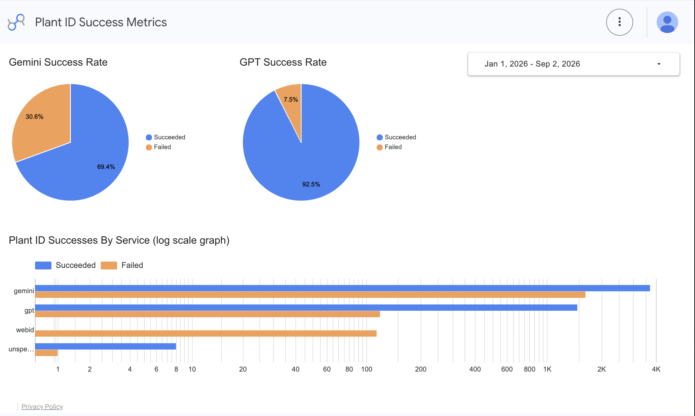

Projects
A research project from this summer, a hackathon build, and an ongoing dashboard for GDG. More to come.
Roadway Compliance RAG System
The Intersection Company & WPI Lab Research — Researcher/Intern, Summer 2026A retrieval-augmented pipeline that checks real Massachusetts road segments against pavement-marking and accessibility regulations — built in five stages. First, I filtered the state's full road inventory down to segments with genuinely usable shoulder and surface-width data (screening out zeros that just meant "not recorded," not "zero-width"). Next, I chunked and embedded three source documents — MUTCD Chapter 3, MA-PDDG Chapter 5, and PROWAG's technical requirements — into a Chroma vector store, tagging every chunk with its source document for traceability.
On top of that I built a compliance checker that retrieves the relevant regulation text per domain (shoulder width, lane width, sidewalk width, crosswalk presence), feeds it to Gemini alongside the road data, and requires a structured JSON verdict citing the exact rule and source — with an explicit rule that PROWAG wins when documents conflict, and "Insufficient Data" over a guess when the numbers just aren't there. I then hardened it for real field data on Lexington road segments, tightening the prompt with explicit edge-line vs. center-line definitions after early runs kept confusing the two, and fixing a token-limit bug that was silently truncating responses. The last stage stress-tested the pipeline against a larger synthetic dataset with resumable, rate-limited runs so a crash wouldn't lose progress. The project wrapped with a final report and a working proof of concept delivered to the company.
DevFest 2026 Itinerary Planner
DevFest 2026 Hackathon — Full-stack, built and demoed with a teamBuilt a trip-planning app end to end with a team: it generates day-by-day itineraries, lets people plan and adjust trips collaboratively, and factors in budget and logistics rather than just listing sights. I worked across the stack, roughly evenly split between frontend and backend. We finished and demoed a working version by the end of the event.
FloraSense
Google Developer Group — Developer, Jan 2026 – PresentWorking with a small team to apply software solutions to real-world company analytics. I contribute to backend logic and data processing using external APIs and Java, building out an analytics dashboard aimed at making the underlying data simple to read at a glance — including a Plant ID Success Metrics view that tracks identification accuracy across services.
